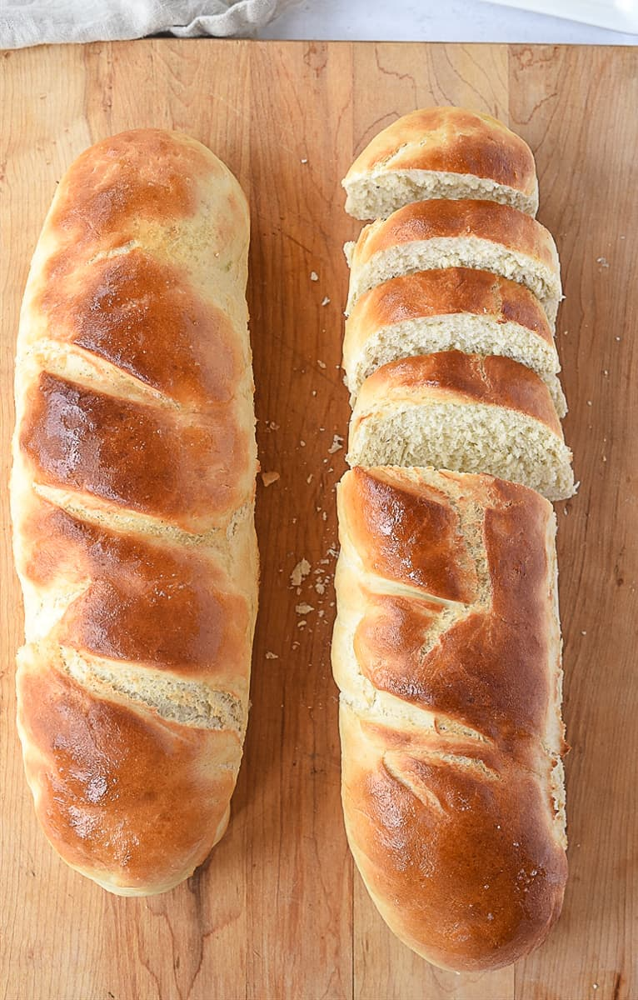

Rustic French Bread

Description
I found this recipe one day while scrolling through TikTok. It seemed simple enough so I decided to try it out the next time we made a pasta dish
for dinner. This bread is incredibly fast to make and is the perfect side for any soup or sauce-based meal. As an added bonus, we usually spead
some butter and garlic on the top when it is fresh out of the oven. Enjoy!
Ingredients
- 1 cup of warm water
- 1 1/4 teaspoon active dry yeast
- 2 teaspoons of sugar
- 1/2 teaspoon salt
- 2 1/2 cups of bread flour
Steps
- Combine all ingredients in a bowl and knead for five minutes. Knead in the bowl for easy cleanup.
- Lightly cover with olive oil, cover bowl, and let rise for 45 minutes.
- Once risen, roll dough into a long oval shape that is about two hands long. Fold 1/3 of the long side into the middle. Cover the fold with the
other 1/3. Pinch any seems together. Shape the ends to form a loaf.
- Make three slashes in the top of the loaf and brush with ice water.
- Place in a cold oven and turn heat to 400. Bake for 27 minutes.
- Let sit for 15 minutes before slicing. Enjoy!